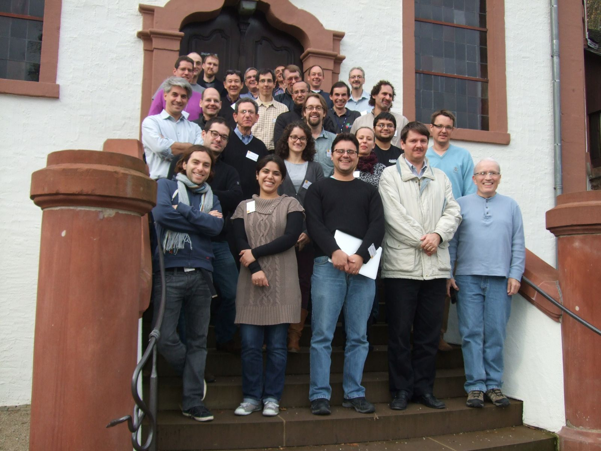

Vaibhav Bajpai
about
blog →
cv
talks
press
research
teaching
activities
publications
contact
Open Source Contributions
nfql →
An implementation of the network flow query language (NFQL)
happy →
A happy eyeballs [RFC 6555] probing tool
ncclient →
A Python library for NETCONF clients.
libnetconf →
A NETCONF library in C intended for building NETCONF clients and servers.
mtr →
A network diagnostic tool.
homebrew-versions →
Versioned formulae for the Homebrew package manager.
slam6d →
A toolkit with algorithms and methods for processing 3D point clouds.
petascope →
A reference implementation of the OGC WCS standard suite.
Seminars
Global Measurement Framework →
Dagstuhl Seminar, November 2013.

Reviewer
IEEE Communications Magazine →
Network and Service Management Series, July 2014.
IFIP Networking 2014 →
IFIP Networking 2014 Conference
Trondheim, Norway, June 2-4, 2014.
NOMS 2014 →
IEEE/IFIP Network Operations and Management Symposium
Krakow, Poland. May 5-9, 2014.
AIMS 2013 →
International Conference on Autonomous Infrastructure, Management and Security
UPC Barcelona, Spain. June 25-28, 2013.
IFIP/IEEE IM 2013 →
IFIP/IEEE International Symposium on Integrated Network Management
Ghent, Belgium. May 27-31, 2013.
Students
Eravuchira, Steffie Jacob
RIPE Atlas Measurements
Masters Semester Project, Fall 2013
Corneliu-Claudiu Prodescu
IPFIX support for NFQL
Masters Semester Project, Spring 2013
pdf
NFQL: A Tool for Querying Network Flow Records
Vaibhav Bajpai, Johannes Schauer, Corneliu Claudiu Prodescu, Jürgen Schönwälder
Network Management Research Group (NMRG) Workshop on NetFlow/IPFIX, IETF 87
Berlin, July 2013
Durim Morina
NFQL frontend parser implementation
Bachelor Thesis, Spring 2013
Mjellma Berisha
NETCONF over TLS Implementation
Bachelor Project, Spring 2013
Memberships
IEEE Student Membership →
Member: #91239383, Valid: 31-Dec-2014
vaibhavbajpai@ieee.org
IEEE Communications Society Membership →
Member: #91239383, Valid: 31-Dec-2014
vaibhavbajpai@comsoc.org
Internet Society Membership →
Member: #74477, Valid: Lifetime
Registration: #351448
SIGCOMM Membership →
Member: #4018820, Valid: 30-Jun-2014
IFIP TC6 Working Group 6.6 Membership →
Management of Networks and Distributed Systems